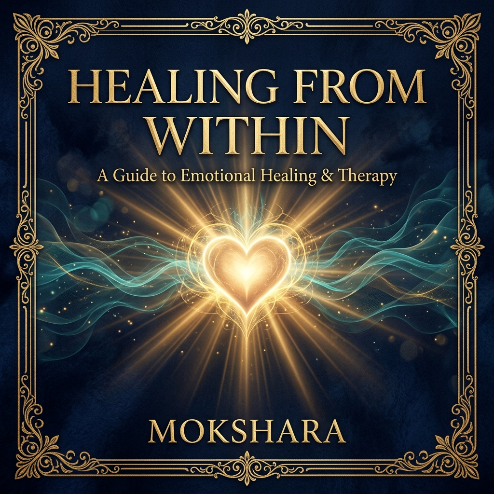
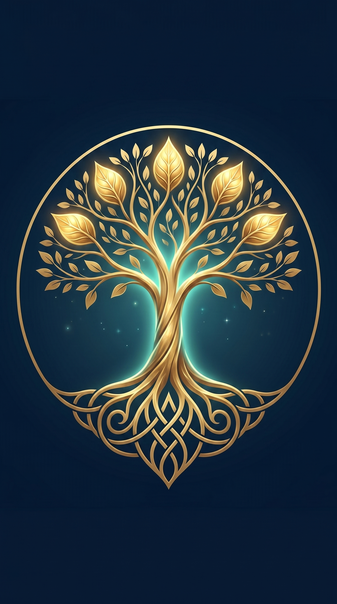
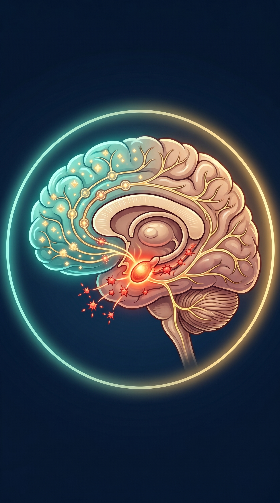
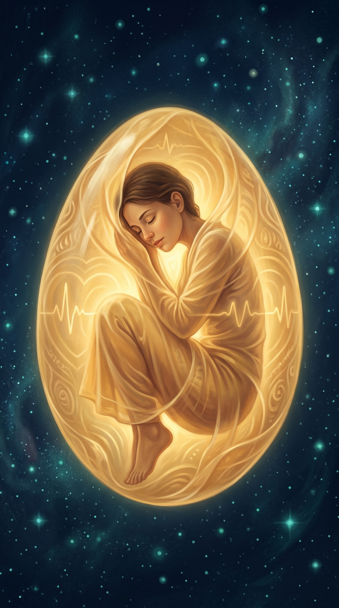
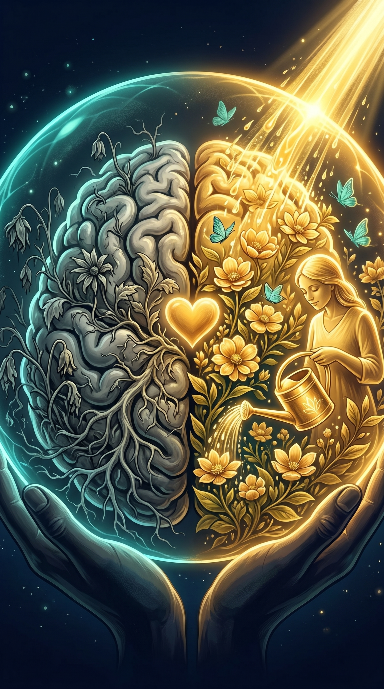
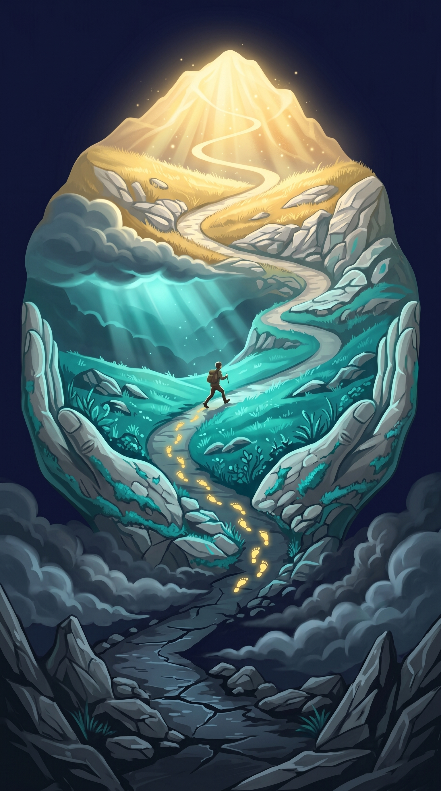

Healing
From Within
"The wound is the place where the Light enters you."
— Rumi
Healing From Within
A Mokshara Wellness Publication
© 2026 Mokshara. All rights reserved.
No part of this ebook may be reproduced, distributed, or transmitted
in any form without the prior written permission of the publisher.
This ebook is intended for educational and informational purposes only.
It does not constitute medical or psychological advice.
If you are experiencing severe emotional distress, please seek
professional support from a licensed therapist or counsellor.
First Edition — 2026
mokshara.in
Contents

- 01The Science of Healing
- 02Your Scars Are Gold — The Kintsugi Mind
- 03Creating Emotional Safety
- 04Rewiring the Reward System
- 05The Recovery Path
The Science of Healing

Emotional pain is not imaginary. Neuroscience has proven that social rejection, grief, and emotional trauma activate the same brain regions as physical pain — specifically the dorsal anterior cingulate cortex and the anterior insula. When someone says "heartbreak hurts," they are describing a neurological reality.
Understanding how your brain processes emotional wounds is the first step toward healing them. Two key players dominate the neuroscience of stress and recovery: the amygdala (your brain's alarm system) and cortisol (the stress hormone it triggers).
The Amygdala: Your Internal Fire Alarm
The amygdala is an almond-shaped structure deep in the brain's temporal lobe. Its job is to detect threats — real or perceived — and trigger a cascade of survival responses: rapid heartbeat, shallow breathing, muscle tension, tunnel vision. This was invaluable when our ancestors faced physical predators. The problem is that the amygdala cannot distinguish between a tiger and a cruel email. It fires the same alarm for both.
Cortisol: The Slow Poison
When the amygdala fires, it signals the adrenal glands to release cortisol. In short bursts, cortisol is helpful — it sharpens focus and mobilises energy. But chronic emotional stress keeps cortisol elevated for weeks, months, even years. Sustained high cortisol shrinks the hippocampus (damaging memory), weakens the immune system, disrupts sleep, and contributes to anxiety and depression.
The Neuroscience
The good news: your brain is not fixed. Neuroplasticity — the brain's ability to rewire itself — means that healing practices physically rebuild the neural pathways damaged by chronic stress. A 2013 study in Biological Psychiatry showed that mindfulness-based stress reduction reduced amygdala grey matter density (less reactive fear) while increasing prefrontal cortex thickness (better emotional regulation) in just 8 weeks.
Your brain was built to survive pain — but it was also built to heal from it. Neuroplasticity is your birthright: the proof that no wound is permanent, and no pattern is final.
Your Scars Are Gold — The Kintsugi Mind
In Japan, there is an ancient art called kintsugi — the practice of repairing broken pottery with gold. Rather than hiding the cracks or discarding the vessel, kintsugi highlights the fractures with precious metal, transforming the object into something more beautiful than it was before it broke.
Your emotional history works the same way. The places where you have been broken — the betrayals, the losses, the failures — are not flaws to be hidden. They are the exact locations where your deepest wisdom, empathy, and strength now reside. Every person who has healed from pain carries gold in their veins that someone who has never suffered simply does not possess.
"There is a crack in everything. That's how the light gets in."
— Leonard CohenPost-traumatic growth (PTG) is the clinical term for this phenomenon. Psychologists Richard Tedeschi and Lawrence Calhoun coined the term after decades of research showing that many trauma survivors don't just return to their baseline — they exceed it. They report deeper relationships, greater appreciation for life, increased personal strength, new priorities, and a richer spiritual understanding.
Signs of Post-Traumatic Growth
- You feel stronger than you believed possible before the pain
- Your relationships have deepened — you value authenticity over appearances
- Small moments bring you genuine gratitude that you never felt before
- Your priorities have shifted toward meaning rather than achievement
- You feel compelled to help others who are going through what you survived
You were not broken beyond repair. You were broken open — and what grew in the fractures was pure gold.
Creating Emotional Safety

Healing cannot happen in a state of threat. Your brain has a hierarchy of needs, and safety is the foundation. When your nervous system perceives danger — whether from a toxic relationship, a stressful environment, or your own inner critic — it diverts all resources to survival. Growth, creativity, connection, and healing are all shut down. This is called the Polyvagal response.
Dr. Stephen Porges' Polyvagal Theory explains that your nervous system operates in three modes: ventral vagal (safe, social, connected), sympathetic (fight or flight), and dorsal vagal (freeze, shutdown, dissociation). Healing only occurs in ventral vagal — the state of felt safety.
Building Your Safety Cocoon
- Identify your safety signals: What makes your body relax? Warm blankets? Soft music? A specific person's voice? The smell of chai? List 5 things
- Create a safe physical space: Designate one spot in your home as your "cocoon." Add comfort items: soft lighting, cushions, a favourite shawl, calming music
- Practice the safety breath: Place both hands over your heart. Breathe slowly. Say silently: "I am safe in this moment. My body is safe. I can rest"
- Set boundaries as safety: Saying "no" to draining people or situations is not selfish — it is an act of self-protection your nervous system needs to heal
- Use co-regulation: Spend time with calm, safe people. Your nervous system mirrors the states of those around you. Calm is literally contagious
The Neuroscience
The vagus nerve — the longest cranial nerve — runs from your brainstem through your face, throat, heart, and gut. When you feel safe, the ventral branch of this nerve activates, producing a cascade of healing: reduced inflammation, improved digestion, deeper sleep, and enhanced immune function. Simply placing your hands over your heart and breathing slowly can activate this pathway within 60 seconds.
You do not need to earn the right to feel safe. Safety is not a reward — it is a requirement. Your healing begins the moment you give yourself permission to stop running.
Rewiring the Reward System

Chronic stress and emotional pain damage your brain's reward circuitry. Dopamine — the neurotransmitter responsible for motivation, pleasure, and hope — becomes depleted. This is why depression feels like nothing matters, why recovering from heartbreak makes the world seem grey, why trauma survivors often say "I can't feel joy anymore."
But dopamine pathways are not permanently broken. They are dormant. And they can be reactivated — not through grand gestures or forced positivity, but through tiny, consistent deposits of positive experience. Think of your reward system as a garden that has been neglected during a drought. You do not need a flood to revive it. You need gentle, steady watering.
7 Micro-Practices to Rebuild Dopamine
- Morning sunlight: 10 minutes of natural light within 30 minutes of waking triggers dopamine production via retinal ganglion cells
- Cold water finish: 30 seconds of cold water at the end of a shower increases dopamine by up to 250% (Huberman Lab, 2021)
- Completion tasks: Finish one small thing — make your bed, clear one shelf, send one message. Completion releases dopamine
- Movement: Just 20 minutes of walking elevates dopamine and serotonin for up to 12 hours
- Novel experiences: Visit a new café, take a different route, cook an unfamiliar recipe. Novelty is dopamine's favourite trigger
- Music with chills: Music that gives you goosebumps releases dopamine from the nucleus accumbens — the brain's pleasure centre
- Savouring: When something good happens, stop for 15 seconds and feel it fully. This trains your brain to register positive events
The Neuroscience
Neuroscientist Rick Hanson describes the brain's "negativity bias" — it is like Velcro for bad experiences and Teflon for good ones. His "HEAL" method counteracts this: Have a positive experience → Enrich it by focusing on it → Absorb it by staying with the feeling for 15+ seconds → Link it to a negative belief to overwrite it. This process physically strengthens positive neural pathways.
Joy is not selfish during healing — it is medicine. Every moment of genuine pleasure you allow yourself is a drop of water reviving the garden your pain tried to kill.
The Recovery Path

Healing is not linear. It does not move in a straight line from "broken" to "fixed." It spirals — sometimes you revisit old pain just when you thought you were past it. Sometimes you have a wonderful week followed by a terrible Tuesday. This is not failure. This is exactly how neuroplasticity works.
Think of recovery as a mountain path that winds upward. Sometimes the path curves back and you see the same valley below — but you are seeing it from a higher elevation. You are not in the same place. You are above it, looking down with new perspective. The view only looks the same; your altitude has changed.
"Healing doesn't mean the damage never existed. It means the damage no longer controls your life."
— Akshay DubeyThe Four Seasons of Healing
Winter (Stillness): The initial phase after pain. Everything feels frozen. Energy is low. This is your body protecting itself. Honour the rest. You are not lazy — you are conserving energy for the work ahead.
Spring (Stirring): Small signs of life return. A moment of laughter, a spark of interest, a dream about the future. These are green shoots. Do not pull them — let them grow at their own pace.
Summer (Growth): Energy returns. You engage with practices, seek connection, create new patterns. This phase feels good — but be gentle. Growth is still fragile.
Autumn (Integration): You harvest the wisdom of your experience. Pain becomes perspective. Survival becomes story. You begin sharing what you learned — and in doing so, you complete the cycle.
Your Healing Journal Prompts
- What season of healing am I in right now? (No judgement — just notice)
- What is one thing I have survived that I once thought would destroy me?
- What strength do I have today that I did not have before my hardest experience?
- If I could speak to myself on my worst day, what would I say?
- What does "healed" look like for me — not perfection, but wholeness?
You are not starting over. You are starting from experience. Every step you have taken — even the ones that felt like falling — has brought you to exactly this point of rising.

May Your Wounds Become Wisdom
Healing is not about forgetting the pain. It is about integrating it — carrying it forward as strength rather than weight. You are not defined by what broke you. You are defined by what you became after.
Go gently. Go bravely. And go knowing that the light inside you was never extinguished — only waiting for you to notice it again.
Relax. Heal. Rise.